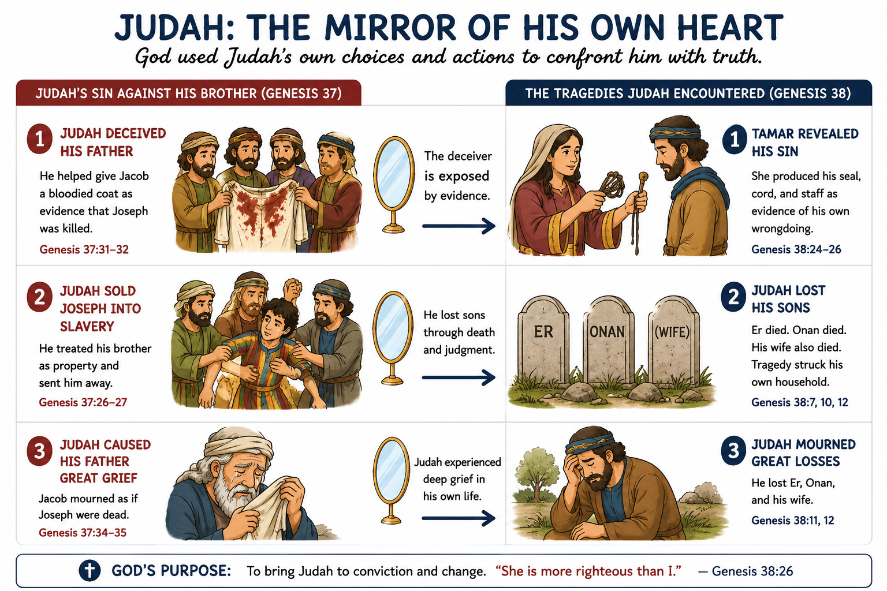
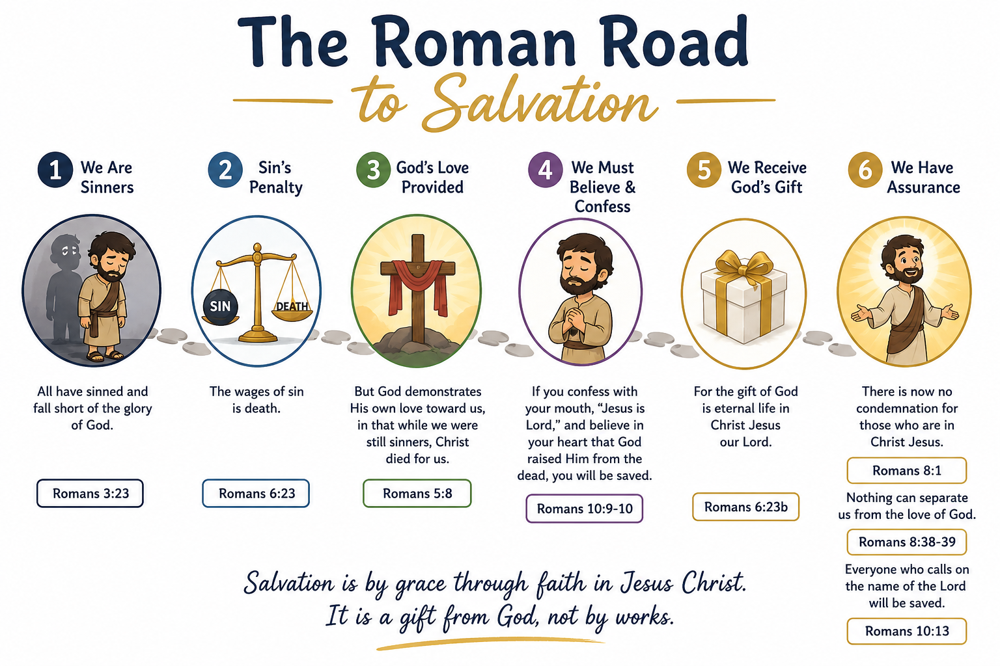

Teaching is not one ministry among many at New Zion, it is central to who we are. Here's where that comes to life.

In the shadow of his more famous brother Joseph, Judah is easily overlooked. Yet the Bible devotes significant attention to his story, and for good reason. Judah's journey from moral failure to courageous advocate is one of the most remarkable transformations in all of Scripture.
He is the brother who sold Joseph into slavery. He is the man whose sin with Tamar is recorded in plain detail. And he is the man who, by Genesis 44, stands before the most powerful official in Egypt and offers himself as a slave in place of his youngest brother.
“Then Judah went up to him and said, ‘Please, my lord, let your servant speak a word to my lord.’”
Genesis 44:18From this man, broken, transformed, and interceding for another, came the tribe of Judah. And from the tribe of Judah came the Lion of Judah himself.
Every Sunday sermon and Wednesday Bible study is recorded and available on our YouTube channel. No membership required, just open and grow.
Sunday morning is where we worship together. Wednesday evening is where we dig in together. Bible study is not a lecture, it is a conversation about Scripture, led with clarity and depth, where your questions are welcomed and expected.
Rev. Parker teaches every Wednesday with the same commitment that drives everything at New Zion: to make God's Word clear, accessible, and applicable to everyday life.
“Study to show yourself approved to God, a worker who does not need to be ashamed, rightly dividing the word of truth.”
2 Timothy 2:157:00 – 8:00 PM
Every Wednesday evening via Zoom. Interactive, in-depth, and open to all. No registration required.
Currently studying: Judah in Genesis, The Forgotten Son
Join on ZoomA simple, Scripture-by-Scripture path through the gospel, one of the most important resources in our teaching library.

Three convictions shape every sermon, every study, and every lesson at New Zion Baptist Church.
We believe the Bible is the inspired, authoritative Word of God, fully sufficient for life and godliness.
God's Word was written to be understood. We teach it plainly, so everyday believers can grasp it, apply it, and share it.
Our goal is to send you home better equipped to live for Christ and serve those around you.
Join us this Sunday at 11:15 AM or Wednesday at 7:00 PM, in person or online. Bring your Bible, bring your questions, and come ready to grow.